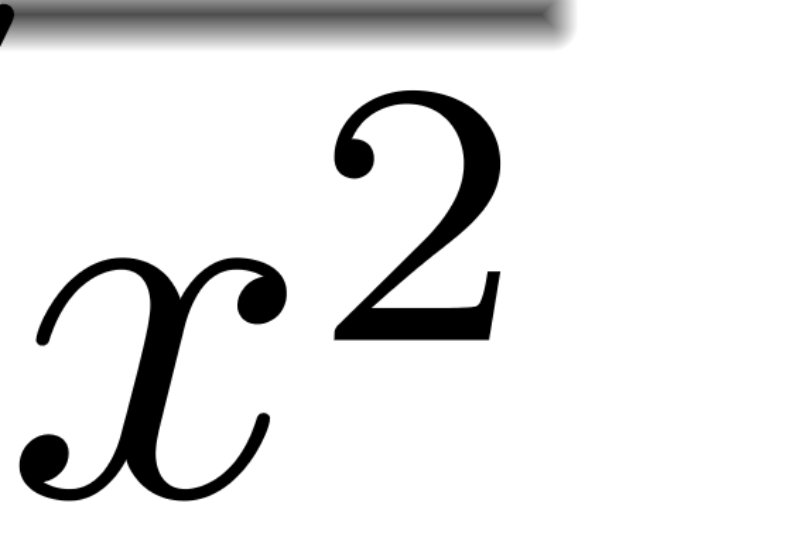
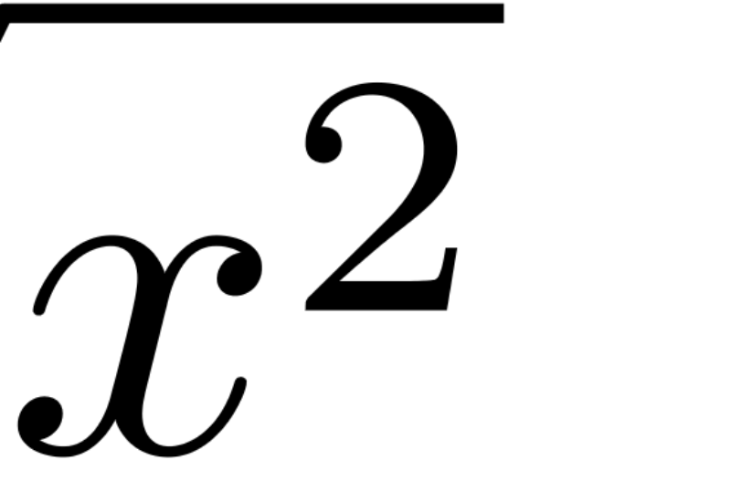

Renderer · Original comparisonFull-document zoom grids
High-zoom bar checks
Before · 28.6×
After · 28.6×
Every outlined cell was checked, including blank cells. Red: failed tile. Green: passed tile. Tap a grid cell to inspect it.

Both tile cores are blank.

Coverage, rasterizer and provenance